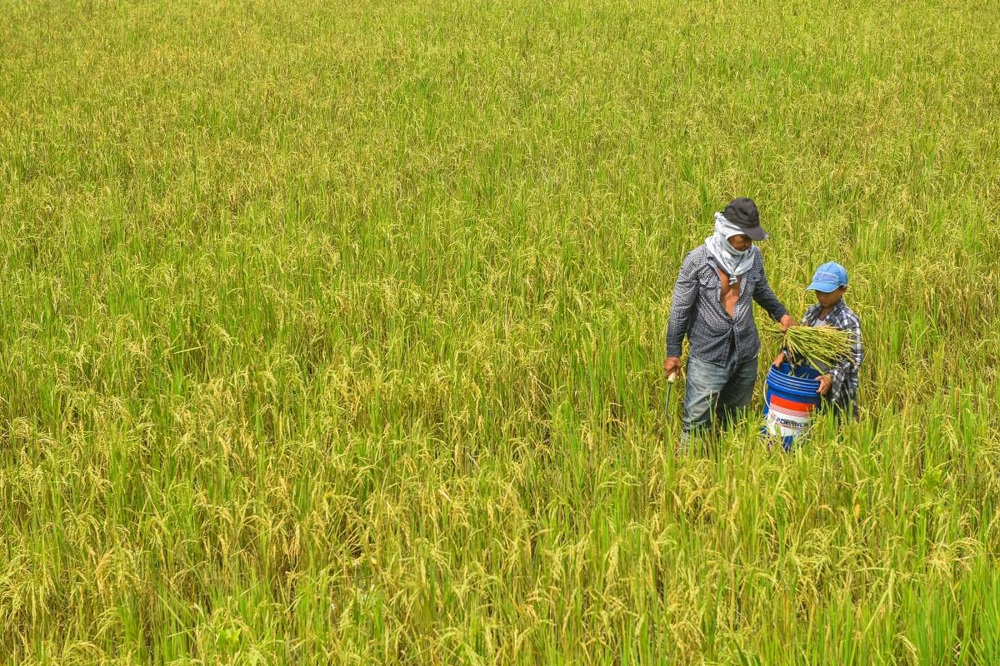

DA: enough pork to hold prices through Christmas
21 Oct 2026
GMA News: Agriculture Secretary Francisco Tiu Laurel Jr. said the country is sitting on 170 days of pork supply. Christmas demand usually nudges prices up, but with stocks this high, he said, they may not rise this year. The PSA’s price situationer has fresh pork with bones at ₱290.85/kg nationally for the first half of October, sliding from ₱297.78 in early September. Separately, the DA has proposed raising pork tariffs by 10 percentage points in 2027, from 15% to 25% in-quota and from 25% to 35% out-quota, citing 6% higher local hog production in the first half and high import and inventory levels.
Operator read: put this next to Tuesday’s talk of pausing import clearances and the picture is clear. The DA thinks pork is too cheap for farmers and is lining up tools to lift it, but not before the holidays. That makes the next ten weeks the cheapest pork window you’re likely to see for a while. Fix Christmas and January pricing with your supplier now, keep your menu prices where they are, and plan your 2027 food-cost budget assuming imported cuts cost more. Flag: the tariff is a proposal and needs an executive order.
Open GMA News · PSA price situationer

Rosal puts 626,000 hectares of rice and corn on watch, Calabarzon included
21 Oct 2026
The DA’s bulletin lists 626,017 hectares of standing crops that Super Typhoon Rosal could affect across Ilocos, Cagayan Valley, Calabarzon, the Cordillera, Bicol and Central Visayas. Of that, 492,322 hectares are rice, 37% at maturity and 30% at the reproductive stage, and 133,695 hectares are corn, 87% at maturity. The DA added that the rain should help areas that have been dry. PAGASA’s 11 pm bulletin had Rosal starting to turn northwest over the sea east of extreme northern Luzon, with Signal No. 3 possible over Batanes and strong to gale-force gusts over most of Luzon and Visayas today and Friday. A gale warning covers the northern and eastern seaboards, and small boats are told to stay in port.
Operator read: the crop number sounds big, but it’s an exposure figure, not a loss figure, and the storm is staying offshore. The near-term kitchen effect is fish, not rice: with boats held in port along the eastern seaboards through the weekend, expect thinner catch from Bicol, Aurora and Cagayan and firmer fish prices into next week. Hold back on fish specials until Monday’s market prices are in. Watch the DA’s damage report after Rosal exits for the actual rice and corn hit.
Open GMA News · PAGASA bulletin